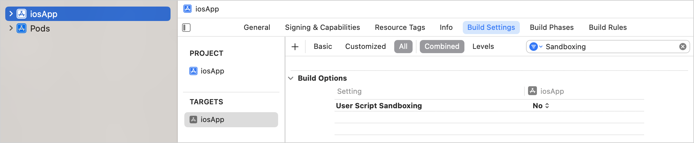

Use a Kotlin Gradle project as a CocoaPods dependency
To use a Kotlin Multiplatform project with native targets as a CocoaPods dependency, complete the initial configuration. You can include such a dependency in the Podfile of the Xcode project by its name and path to the project directory containing the generated Podspec.
This dependency will be automatically built (and rebuilt) along with this project. Such an approach simplifies importing to Xcode by removing a need to write the corresponding Gradle tasks and Xcode build steps manually.
You can add dependencies between a Kotlin Gradle project and an Xcode project with one or several targets. It's also possible to add dependencies between a Gradle project and multiple Xcode projects. However, in this case, you need to add a dependency by calling pod install manually for each Xcode project. In other cases, it's done automatically.
Xcode project with one target
Create an Xcode project with a Podfile if you haven't done so yet.
Make sure to disable User Script Sandboxing under Build Options in the application target:

Add the path to your Xcode project Podfile with podfile = project.file(..) in the build.gradle(.kts) file of your Kotlin project. This step helps synchronize your Xcode project with Gradle project dependencies by calling pod install for your Podfile.
Specify the minimum deployment target version for the Pod library.
kotlin {
iosArm64()
cocoapods {
version = "2.0"
summary = "CocoaPods test library"
homepage = "https://github.com/JetBrains/kotlin"
ios.deploymentTarget = "16.0"
pod("SDWebImage") {
version = "5.20.0"
}
podfile = project.file("../ios-app/Podfile")
}
}
Add the name and path of the Gradle project you want to include in the Xcode project to Podfile.
use_frameworks!
platform :ios, '16.0'
target 'ios-app' do
pod 'kotlin_library', :path => '../kotlin-library'
end
Run pod install in you project directory.
When you run pod install for the first time, it creates the .xcworkspace file. This file includes your original .xcodeproj and the CocoaPods project.
Close your .xcodeproj and open the new .xcworkspace file instead. This way you avoid issues with project dependencies.
Run Reload All Gradle Projects in IntelliJ IDEA (or Sync Project with Gradle Files in Android Studio) to re-import the project.
Xcode project with several targets
Create an Xcode project with a Podfile if you haven't done so yet.
Add the path to your Xcode project Podfile with podfile = project.file(..) to build.gradle(.kts) of your Kotlin project. This step helps synchronize your Xcode project with Gradle project dependencies by calling pod install for your Podfile.
Add dependencies to the Pod libraries you want to use in your project with pod().
For each target, specify the minimum deployment target version for the Pod library.
kotlin {
iosArm64()
tvosArm64()
cocoapods {
version = "2.0"
summary = "CocoaPods test library"
homepage = "https://github.com/JetBrains/kotlin"
ios.deploymentTarget = "16.0"
tvos.deploymentTarget = "16.0"
pod("SDWebImage") {
version = "5.20.0"
}
podfile = project.file("../severalTargetsXcodeProject/Podfile") // specify the path to the Podfile
}
}
Add the name and path of the Gradle project you want to include in the Xcode project to the Podfile.
target 'iosApp' do
use_frameworks!
platform :ios, '16.0'
# Pods for iosApp
pod 'kotlin_library', :path => '../kotlin-library'
end
target 'TVosApp' do
use_frameworks!
platform :tvos, '16.0'
# Pods for TVosApp
pod 'kotlin_library', :path => '../kotlin-library'
end
Run pod install in you project directory.
When you run pod install for the first time, it creates the .xcworkspace file. This file includes your original .xcodeproj and the CocoaPods project.
Close your .xcodeproj and open the new .xcworkspace file instead. This way you avoid issues with project dependencies.
Run Reload All Gradle Projects in IntelliJ IDEA (or Sync Project with Gradle Files in Android Studio) to re-import the project.